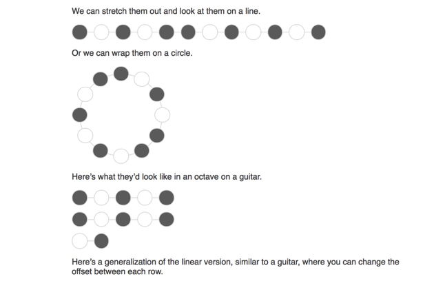

Sean O'Reilly
FretFinder is an app for helping guitarists find inversions of chord progressions, scale positions, and their way
across the fretboard. It is meant to be agnostic towards the guitarist's knowledge of music theory. You can discover shapes
by clicking on the fretboard, or by entering a specific chord in the scrollable chord selector. FretFinder is built with
Apache Cordova, and works on iOS, Android, and web.
The Key Wheel is a visualization of 7-tone musical scales that I discovered while doing mathematical research at UC
Davis. The network of scales can be used by musicians to find cool new ways to change keys, and see which keys contain
certain chords. So far, the Key Wheel has helped me find really interesting and non-obvious cycles of notes that can
be used as jazz progressions.
Funcy Organ started out as an idea for a color organ. Currently it's just a cool way to plot functions
with your graphics card, and my first real exploration of the OpenGL coding language.
Scaler is a web application designed for guitarists and pianists. These two common instruments have really different
visualizations, and sometimes it can be difficult to quickly transcribe a song on one of these instruments to the other.
With Scaler, as the user selects notes, they are sounded and highlighted accross both instruments in all possible places.
A pattern selector allows the guitar to be divided into slices of notes to see inversions accross the fretboard.

Explorable Explanation of Music Theory
My friend and I are working on set of visual interactive tools to help explain the various patterns and cycles in Music
Theory. The various React components(embedded in markdown!) automatically update each other throughout the explanation.
